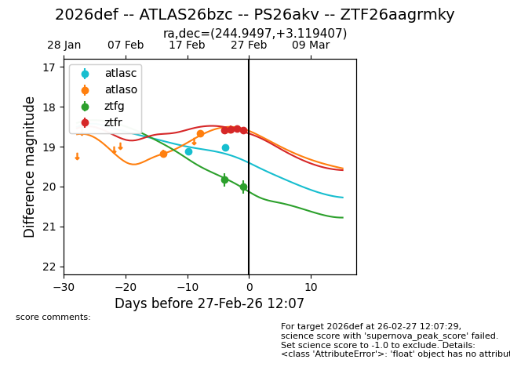
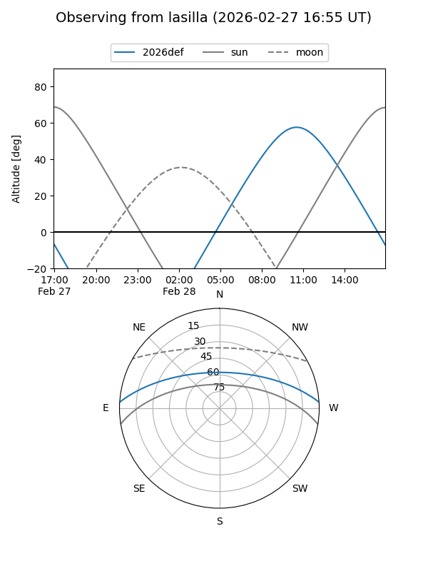
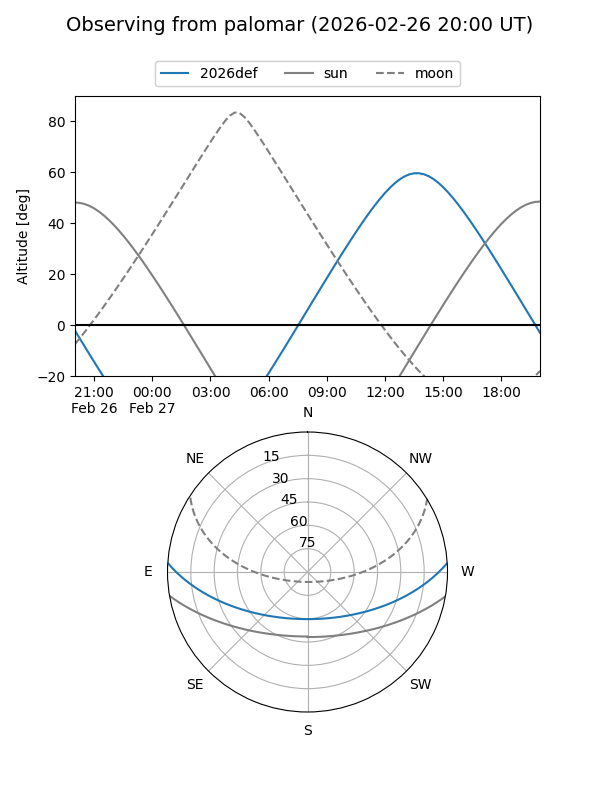
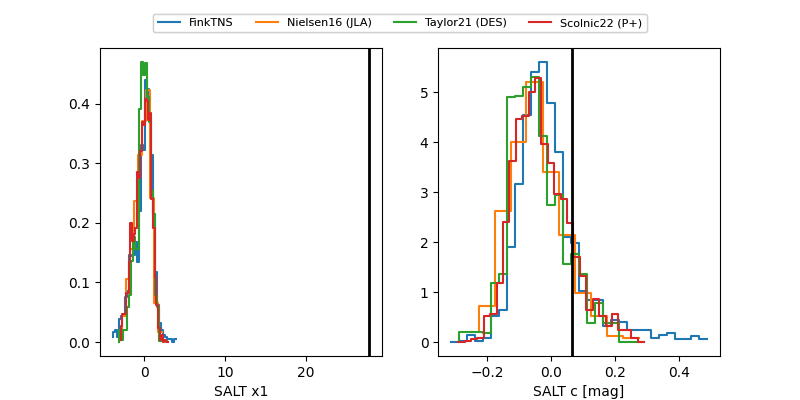

2026def
Target 2026def at 2026-02-27 12:09
Aliases and brokers:
FINK: link
Lasair: link
ALeRCE: link
TNS: link
YSE: link
alt names
ZTF26aagrmky (ztf,fink_ztf)
2026def (tns,yse)
ATLAS26bzc (atlas)
PS26akv (panstarrs)
Coordinates:
equatorial (ra, dec) = 244.9497,+3.11941
equatorial (HMS+DMS) = 16:19:47.92,+03:07:09.86
galactic (l, b) = (16.5684,+34.80812)
Flags:
Photometry:
last atlasc=19.02, atlaso=18.56, ztfg=20.00, ztfr=18.59
2 atlasc, 3 atlaso, 2 ztfg, 4 ztfr detections
Lightcurve

Visibility


Additional plots
